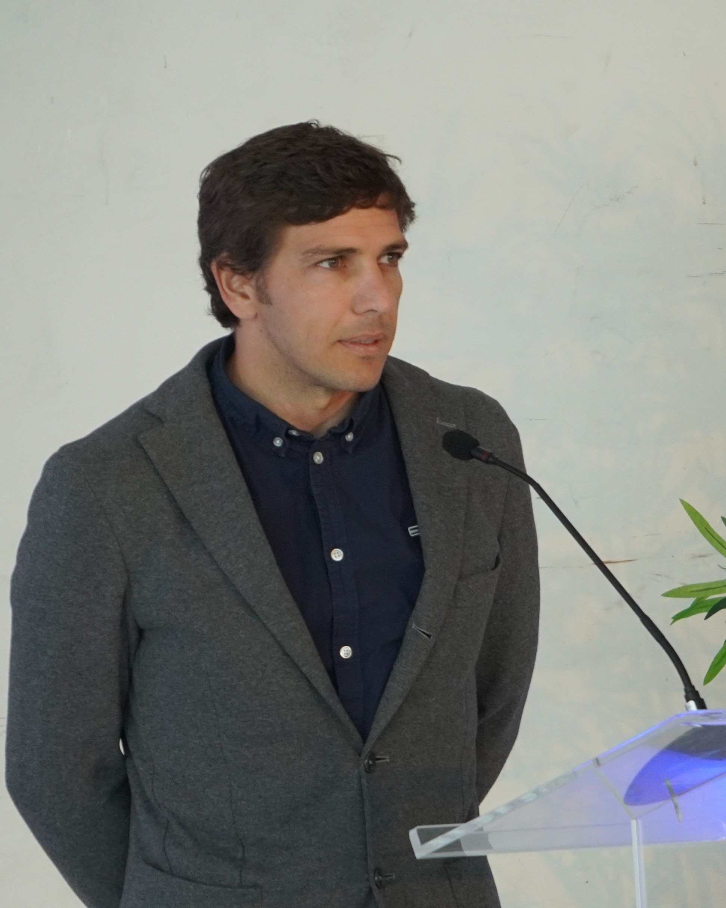

<!DOCTYPE html>
<html lang="en">
<head>
  <meta charset="UTF-8">
  <meta name="viewport" content="width=device-width, initial-scale=1.0">
  <title>About – WEC-Pro</title>

  <!-- Tailwind CSS required for nav.js styling -->
  <script src="https://cdn.tailwindcss.com"></script>
  <script>
    tailwind.config = {
      theme: {
        extend: { colors: { primary: { 600: "#003399", 700: "#003399" } } },
      },
    };
  </script>

  <style>
    body {
      font-family: Arial, sans-serif;
      background-color: #f4f4f9;
      color: #333;
      margin: 0;
      padding: 0;
    }

    /* Blur for sticky header */
    .header-blur { 
      background: rgba(255,255,255,0.9); 
      backdrop-filter: saturate(120%) blur(6px); 
    }

    .container {
      max-width: 900px;
      margin: 40px auto;
      padding: 40px; /* Increased padding slightly for better look */
      background-color: #fff;
      box-shadow: 0 0 10px rgba(0,0,0,0.1);
      border-radius: 8px;
    }

    /* Scoped to .container to prevent Tailwind reset from reducing heading size/weight */
    .container h1 {
      font-size: 2em;
      font-weight: 700;
      color: #0f172a; /* slate-900 */
      margin-bottom: 30px;
      text-align: center;
      line-height: 1.25;
    }
    .container h2 {
      font-size: 1.5em;
      font-weight: 700;
      color: #0f172a;
      margin-top: 40px;
      margin-bottom: 20px;
      border-bottom: 2px solid #f4f4f9;
      padding-bottom: 10px;
      line-height: 1.35;
    }
    .container p {
      font-size: 1.1em;
      line-height: 1.6;
      margin-bottom: 20px;
      color: #333;
    }
    .container .contact-email {
      font-family: 'Courier New', Courier, monospace;
      background-color: #f8fafc;
      padding: 15px;
      border-radius: 4px;
      border: 1px dashed #cbd5e1;
      display: inline-block;
      font-weight: bold;
      color: #0f172a;
    }
  </style>
</head>
<body class="min-h-screen flex flex-col">

  <div id="root"></div>

  <!-- React & Babel requirements for nav.js -->
  <script crossorigin src="https://unpkg.com/react@18/umd/react.development.js"></script>
  <script crossorigin src="https://unpkg.com/react-dom@18/umd/react-dom.development.js"></script>
  <script src="https://unpkg.com/@babel/standalone/babel.min.js"></script>

  <!-- External Nav Component -->
  <script src="nav.js"></script>

  <script type="text/babel">
    function App() {
      return (
        <div className="min-h-screen flex flex-col">
          {/* New Nav Component */}
          <SiteHeader />

          {/* Main Content */}
          <main className="flex-1">
            <div className="container">
              <h1></h1>

              <h2>About the Author</h2>
              <p>
                Gianmaria Giannini is an independent researcher and specialist in the engineering of marine renewables, with a consolidated scientific identity focused on wave and tidal energy technologies. He currently is a Marie Sklodowska-Curie Actions (MSCA) Postdoctoral fellow at Marine Offshore Renewable Energy (MORE) lab. of the Politecnico di Torino, where he is the Principal Investigator for the WEC-Pro project. This initiative is about exploring the intersection of desing optimization and Large-Scale Additive Manufacturing (LSAM) for Wave Energy Converters in partnership with global LFAM leader Caracol AM and, with research entities, such as the Interdishiplinary Centre of Marine Environmental Research (CIIMAR), the Faculty of Engineering of Univeristy of Porto (FEUP), Portugal, and the Natural Ocean Engineering Laboratory (NOEL), Italy.
              </p>
              <p>
                With a background that bridges academia, specialized and high-tech industry, Gianmaria has held key research and specialist roles across the UK, Italy, and Portugal. His work has been recognized with multiple innovation awards, such as the 1st Prize at the BlueAct Business Idea Competition in Porto, Portugal. He has authored over 60 scientific and technical papers and was part of 10 marine renewable energy projects—ranging from international scientific missions to national and international projects also involving prototype deployments at sea. Holding a PhD in Naval Architecture, Ocean and Marine Engineering from the University of Strathclyde, Gianmaria remains dedicated to advancing sustainable marine technologies by adopting an applied, real-world R&D approach.
              </p>

              <figure style={{ textAlign: 'center', margin: '30px 0' }}>
                
                <figcaption style={{ fontSize: '0.9em', color: '#64748b', marginTop: '10px', fontStyle: 'italic' }}>
                </figcaption>
              </figure>

              <h2>Contact Email</h2>
              <p>
                For inquiries regarding the project, data sets, or collaboration opportunities, please reach out via email:
              </p>
              <div style={{ textAlign: 'center' }}>
                <span className="contact-email">ggian.res [ At ] gmail.com</span>
              </div>

            </div>
          </main>
        </div>
      );
    }

    const root = ReactDOM.createRoot(document.getElementById("root"));
    root.render(<App />);
  </script>
</body>
</html>